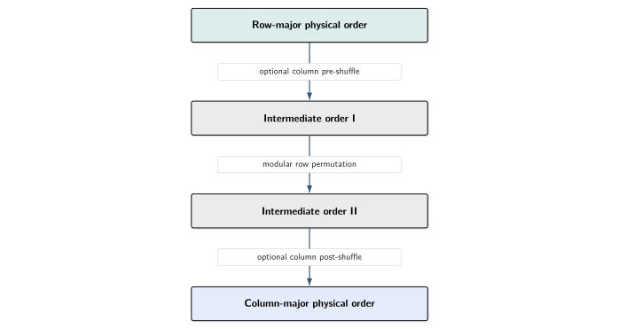
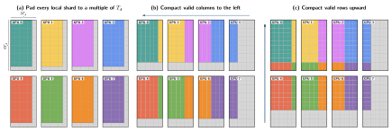
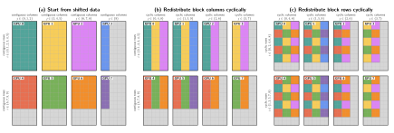

Memory distribution¤
JAXMg accepts ordinary JAX arrays sharded over a two-dimensional device mesh. However, cuSOLVERMp expects each local matrix buffer to use column-major memory and the global matrix to follow a 2D block-cyclic distribution. JAXMg bridges these layouts inside one fused C++/CUDA FFI call.
The forward path used before a distributed solver is:
{kind=link}
The sections below describe the three forward redistribution stages. After a
matrix-valued solver output is produced, the stages are reversed to restore the
original JAX layout. Values-only syevd and gesvd return replicated vectors
directly and do not need reverse matrix redistribution.
Memory bound¤
The native redistribution uses one scratch allocation per FFI call. Its size is set by the largest tile slab moved during the final 2D block-cyclic stage. For a matrix with local capacities \(N_r \times N_c\) and solver tile dimensions \(T_r \times T_c\),
elements are required. For the square tiles used by the public solvers, \(T_r=T_c=T_A\). The factor of three is derived in Stage 3.
Stages 1 and 2 reuse this allocation and process the largest batches that fit within it. They do not allocate a second full local matrix. When more than one matrix participates in a fused solver workflow, JAXMg allocates the maximum scratch requirement across those matrices and reuses the same buffer.
Layout terminology¤
Three different concepts are involved in the redistribution.
Logical matrix¤
The logical matrix describes which value appears at each matrix coordinate. Changing the physical memory order or the GPU that owns a value does not change the logical matrix.
Local memory layout¤
This is the physical order of elements within each GPU buffer:
row-major: consecutive elements belong to the same logical row
column-major: consecutive elements belong to the same logical column
JAX presents the local matrix shards in row-major order, whereas cuSOLVERMp requires column-major local buffers.
Process-grid mapping¤
This determines how communicator ranks are placed in the two-dimensional cuSOLVERMp process grid. For a \(2 \times 3\) grid, the supported row-major rank map is
while the supported column-major rank map is
Here, \((p_r,p_c)\) is a process-grid coordinate and \((P_r,P_c)\) is the process grid shape. JAXMg accepts these regular row-major and column-major mappings. Arbitrary rank maps are rejected because cuSOLVERMp exposes these two standard grid-mapping modes rather than a general rank-to-coordinate table.
Stage 1: local layout conversion¤
The first stage reconciles the local physical memory layouts used by JAX and cuSOLVERMp. The logical matrix is not transposed. For example,
has the following physical memory vectors:
Asking XLA to materialize a column-major FFI input directly can require an additional full-sized local matrix. JAXMg instead converts each donated buffer in place using a parallel implementation of the rectangular permutation decomposition introduced by Catanzaro, Keller, and Garland in A Decomposition for In-place Matrix Transposition. The conversion consists of a modular row permutation surrounded, when required by the local dimensions, by column pre- and post-shuffles:
{kind=link}

The required shuffles are determined from the local row and column counts and their greatest common divisor. Each kernel copies a batch of complete rows or columns into scratch before writing the permuted values back. The shared scratch size therefore controls the number of rows or columns processed in one launch.
Parallelism¤
Layout conversion is entirely local. Every GPU processes its shard concurrently on its XLA-provided CUDA stream, with no inter-rank communication. Within each GPU, the kernels batch as many independent rows or columns as the shared scratch allocation permits.
Stage 2: top-left edge-padding alignment¤
If a local shard dimension is not divisible by the corresponding tile dimension, JAXMg first pads that shard to provide enough capacity for the cuSOLVERMp layout. This leaves padding between neighbouring shards in the global process grid. A destination tile may consequently overlap both real entries and padding, preventing Stage 3 from moving complete contiguous tile slabs.
The native backend therefore compacts the real matrix towards the global top-left, consolidating padding on the global right and bottom edges.
{kind=link}

The compaction is an open-chain permutation: padding provides empty destinations, so the source data can be moved without preserving an additional live slab. It proceeds in two passes:
- Horizontal pass: shift valid column slabs left within each process row.
- Vertical pass: shift valid row slabs upwards within each process column.
Dependency waves¤
Within either pass, a movement can depend on a previous movement creating its destination space. The schedule is therefore divided into ordered waves. Waves execute sequentially, but every transfer in one wave is independent across the orthogonal process-grid axis:
| Pass | Movement within | Concurrent across |
|---|---|---|
| Horizontal | each process row | process rows |
| Vertical | each process column | process columns |
For example, one horizontal wave can move matching column slabs simultaneously across all process rows. A later wave may then shift the remaining data locally within each rank. The vertical pass applies the same scheduling rule across process columns.
Unlike the closed cycles in Stage 3, edge-padding alignment can use the entire shared scratch allocation as one temporary transfer buffer. Moves larger than that allocation are divided into the largest contiguous rectangles that fit. Cross-rank rectangles use the borrowed communicator, while overlapping same-rank rectangles are packed into scratch before being written locally.
Padding temporarily requires an additional JAX allocation
The initial capacity padding must be performed by JAX because an existing donated allocation cannot be expanded once assigned. Both the original and padded arrays may therefore coexist temporarily. Choose a tile size that divides both local shard dimensions when possible; see Choose a tile size.
Stage 3: 2D block-cyclic redistribution¤
After edge-padding alignment, the global matrix is a regular array of complete tiles. cuSOLVERMp distributes these tiles cyclically over both process-grid axes. For a process grid with \(P_r\) rows and \(P_c\) columns, the tile at global tile coordinate \((i,j)\) belongs to
JAXMg constructs an explicit source-to-destination mapping for the complete tile array and applies it in two separable phases:
- Column-owner phase: complete tile-column slabs are permuted within each process row until every tile has the correct process-column owner.
- Row-owner phase: complete tile-row slabs are then permuted within each process column until every tile has the correct process-row owner.
{kind=link}

The first phase can run independently across all process rows; the second can run independently across all process columns. This separable construction moves full-height or full-width tile slabs instead of transferring individual tiles.
Permutation cycles¤
Within one process row or column, the source-to-destination mapping is a bijection. JAXMg decomposes that mapping into disjoint closed permutation cycles, skipping fixed points that already occupy their target slot. Each cycle is applied in place by:
- Saving one live slab;
- Rotating the remaining slabs from the end of the cycle towards the vacated slot;
- Restoring the saved slab into its final destination.
Dependent steps within a process-row or process-column group are serialized. Matching steps from independent groups are assigned the same sequence number and can participate in one communication round, provided their ranks do not conflict. Larger process grids may require more rounds, but the amount of live temporary data remains bounded.
Slab movement and scratch size¤
Each cycle uses three scratch slots:
{kind=link}
A tile-column slab contains at most \(T_cN_r\) elements, while a tile-row slab contains at most \(T_rN_c\) elements. The largest possible slab therefore has
elements. Providing one send, receive, and saved slot gives the fixed bound
The movement schedule is fixed by the process grid, rank mapping, tile size, and padded local shape. These values are static for a compiled JAX call, so the same native schedule is reused on every execution.
Communication and orchestration¤
JAXMg builds the native backend against the matching XLA source through Bazel.
This gives the FFI handler access to XLA's underlying NCCL communicator handle
(ncclComm_t). The same communicator is borrowed for the inter-rank
redistribution and passed to cuSOLVERMp for solver execution. Movements that
remain on one rank use local CUDA operations on the XLA-provided stream.
The forward redistribution, solver operation, and reverse redistribution therefore share one communication context inside a single fused C++/CUDA FFI call. JAXMg does not create a second independent communicator or return matrix data to Python between stages.
Reverse path¤
Matrix-valued solver outputs are produced in cuSOLVERMp's column-major, 2D block-cyclic layout. Before returning to JAX, the native call applies the inverse block-cyclic cycles, reverses edge-padding alignment when needed, and restores row-major local memory. Python then removes visible capacity padding.
For potrs and lu_solve, a vector solve input is represented internally as
an \(N \times 1\) matrix. The public wrappers restore the original vector rank
before returning the result.
Solver-specific native work¤
The redistribution stages are shared by every solver workflow. Their main differences are the cuSOLVERMp call sequence and solver workspace:
potrscallscusolverMpPotrffollowed bycusolverMpPotrs. Ifreturn_logdet=True, each process reads the Cholesky diagonal entries it owns and the rank-local sums are combined by an in-place NCCL all-reduce.lu_solvecallscusolverMpGetrffollowed bycusolverMpGetrsand allocates a pivot vector according to the local cuSOLVERMp column ownership.syevdcallscusolverMpSyevd. Its eigenvector-producing mode materializes a full distributed eigenvector matrix and reverses the redistribution for that output. Its eigenvalues-only mode omits both operations.gesvdcallscusolverMpGesvdfor rectangular matrices. U and Vh are selected independently in reduced or full form, and only requested vector matrices are allocated and reverse-redistributed. The shared scratch buffer is sized to the largest requirement among A and those outputs.
Python and native responsibilities¤
Python is responsible for:
- validating dtypes, shapes, meshes, rank maps, and tile sizes;
- requiring one Python process per GPU for cuSOLVERMp execution;
- calculating and applying local capacity padding;
- constructing and caching the FFI wrapper.
Native C++/CUDA is responsible for:
- local row-major/column-major conversion;
- top-left edge-padding alignment;
- 2D block-cyclic redistribution;
- cuSOLVERMp handles, descriptors, workspace, and solver calls;
- reverse redistribution for matrix-valued outputs.
Code map¤
| Stage 1: local layout conversion |
|---|
| src/cuda/memory_redist/layout_convert.cu.cc |
| Stage 2: edge-padding alignment |
|---|
| src/cuda/memory_redist/edge_padding_2d.cc |
| Stage 3: 2D block-cyclic redistribution |
|---|
| src/cuda/memory_redist/block_cyclic_2d.cc |
| src/cuda/memory_redist/rectangle_pack.cc |
| src/cuda/memory_redist/scratch.cc |